JEE Main 2026 (Session 2), 2 Apr Shift 1: worked solutions for review
Questions and options are NTA’s own images; the green option is NTA’s final key. Every solution below was written by Claude
and checked against NTA’s final key. It is not NTA’s solution. Please mark anything unclear or wrong.
Q1 · Mathematics · MCQ · ID 6911211
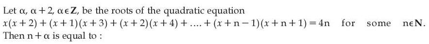
(1) 
(2) 
(4) 
Hint 1: Each bracket is (x+k)(x+k+2) for k = 0, 1, …, n−1. Expand one bracket first, then add them up as a quadratic in x.
Hint 2: After adding and dividing by n you get x2 + (n+1)x + (n−1)(2n−1)/6 + n − 5 = 0. Two roots that differ by 2 means (difference of roots)2 = 4, i.e. discriminant = 4.
What this tests: Sums of series (Σk, Σk2) feeding into the root conditions of a quadratic.
1. One bracket: (x+k)(x+k+2) = x2 + (2k+2)x + (k2+2k).
2. Add for k = 0 to n−1 and divide by n: x2 + (n+1)x + (n−1)(2n−1)/6 + (n−1) − 4 = 0.
3. Roots α and α+2 differ by 2, so the discriminant must be 4.
4. Try natural n: only n = 7 gives whole-number roots. The equation is x2 + 8x + 15 = 0, roots −5 and −3.
5. So α = −5 and n + α = 7 − 5 = 2.
Answer: (3)
If this felt hard: If the summing step was the hard part, practise writing a general term and using Σk = n(n+1)/2 and Σk2 = n(n+1)(2n+1)/6. The fact that roots differing by d means discriminant = d2 (when the x2 coefficient is 1) is worth remembering.
Claude’s answer: 3 · NTA final key: 3 · agrees · Answer recomputed with SymPy (tools/verify_pyq_solutions.py)
Q2 · Mathematics · MCQ · ID 6911212
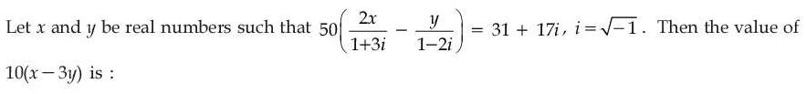
Hint 1: Make each fraction simpler first: multiply top and bottom by the conjugate of its denominator.
Hint 2: 2x/(1+3i) = x(1−3i)/5 and y/(1−2i) = y(1+2i)/5. Then compare real parts and imaginary parts on both sides.
What this tests: Rationalising complex denominators and equating real and imaginary parts.
1. 2x/(1+3i) = 2x(1−3i)/10 = x(1−3i)/5.
2. y/(1−2i) = y(1+2i)/5.
3. So 50 × [x − 3xi − y − 2yi]/5 = 10[(x − y) − i(3x + 2y)] = 31 + 17i.
4. Real parts: x − y = 3.1. Imaginary parts: −(3x + 2y) = 1.7, so 3x + 2y = −1.7.
5. Solving: x = 0.9, y = −2.2.
6. 10(x − 3y) = 10(0.9 + 6.6) = 75.
Answer: (4)
If this felt hard: If the sign of the imaginary part slipped, slow down at step 3: write the real and imaginary parts on separate lines before comparing. Revise 'Complex Numbers' (conjugates and equality of complex numbers).
Claude’s answer: 4 · NTA final key: 4 · agrees · Answer recomputed with SymPy (tools/verify_pyq_solutions.py)
Q3 · Mathematics · MCQ · ID 6911213
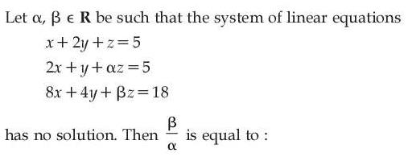
(2) 
(3) 
Hint 1: For 'no solution' the coefficient determinant must be zero. Start there to link α and β.
Hint 2: det = 1(β − 4α) − 2(2β − 8α) + 1(8 − 8). Set it to 0. Then check that the equations really contradict each other (compare equation 3 with a multiple of equation 2).
What this tests: Consistency of linear equations using determinants (Cramer's rule conditions).
1. det of coefficients = 1(β − 4α) − 2(2β − 8α) + 0 = 12α − 3β.
2. No solution needs det = 0, so β = 4α.
3. Check it is really inconsistent: with β = 4α, equation 3 is 8x + 4y + 4αz = 18, but 4 × equation 2 is 8x + 4y + 4αz = 20. These can't both hold, so there is no solution.
4. β/α = 4.
Answer: (2)
If this felt hard: Remember: det = 0 alone means 'no solution OR infinitely many'. You must then check whether the equations contradict each other. Revise 'Matrices and Determinants': consistency of a system.
Claude’s answer: 2 · NTA final key: 2 · agrees · Answer recomputed with SymPy (tools/verify_pyq_solutions.py)
Q4 · Mathematics · MCQ · ID 6911214
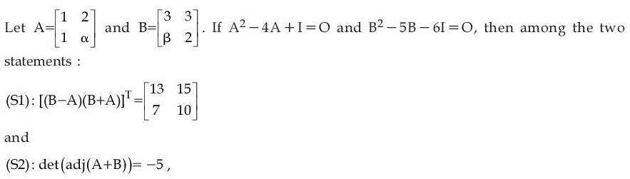
Hint 1: A 2×2 matrix (not a multiple of I) satisfies A2 − (trace)A + (det)I = O. Compare this with the given equations.
Hint 2: From A2 − 4A + I = O: trace A = 4 and det A = 1. From B2 − 5B − 6I = O: trace B = 5 and det B = −6. Also, for 2×2 matrices det(adj M) = det M.
What this tests: Cayley–Hamilton theorem for 2×2 matrices, transpose, and det(adj A) = |A|n−1.
1. Cayley–Hamilton for A: trace = 1 + α = 4 gives α = 3 (and det = 3 − 2 = 1 ✓).
2. For B: trace = 5 ✓ and det = 6 − 3β = −6 gives β = 4.
3. (B − A)(B + A) works out to [13 15; 7 10]. Its transpose is [13 7; 15 10], which is not what S1 says. S1 is wrong: it quotes the matrix before transposing.
4. A + B = [4 5; 5 5], det = 20 − 25 = −5. For a 2×2 matrix det(adj M) = det M = −5. S2 is correct.
Answer: (2), only S2 is correct.
If this felt hard: If finding α and β was the hard part, revise the 2×2 Cayley–Hamilton form A2 − (tr A)A + |A|I = O. Keep |adj A| = |A|n−1 handy: for n = 2 it is just |A|. A transpose trap like S1 is common, so always apply the last operation in the statement.
Claude’s answer: 2 · NTA final key: 2 · agrees · Answer recomputed with SymPy (tools/verify_pyq_solutions.py)
Q5 · Mathematics · MCQ · ID 6911215
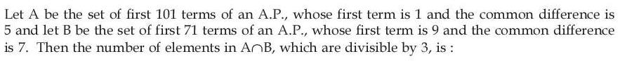
(1) 
(2) 
(3) 
(4) 
Hint 1: Describe each set by its remainder: A is numbers 1 more than a multiple of 5; B is numbers 2 more than a multiple of 7.
Hint 2: Common terms satisfy x ≡ 1 (mod 5) and x ≡ 2 (mod 7). The first one is 16, and they repeat every 35. List them up to the smaller last term (499), then test divisibility by 3.
What this tests: Common terms of two APs (common difference = lcm) and divisibility.
1. A = 1, 6, 11, …, 501 (all ≡ 1 mod 5). B = 9, 16, 23, …, 499 (all ≡ 2 mod 7).
2. The first common number is 16, and common numbers repeat every lcm(5, 7) = 35: 16, 51, 86, …
3. They must be ≤ 499: 16 + 35t ≤ 499 gives t = 0 to 13, so 14 common terms.
4. 16 + 35t is divisible by 3 when 1 + 2t is divisible by 3, i.e. t = 1, 4, 7, 10, 13.
5. That is 5 numbers.
Answer: (2)
If this felt hard: If listing the common terms was the hard part, remember the common terms of two APs form a new AP with difference lcm(d1, d2). Revise 'Sequences and Series'.
Claude’s answer: 2 · NTA final key: 2 · agrees · Answer recomputed with SymPy (tools/verify_pyq_solutions.py)
Q6 · Mathematics · MCQ · ID 6911216
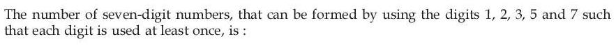
Hint 1: Every one of the 5 digits must appear, in 7 places. So the extra 2 places repeat some digits. In how many ways can the repetition happen?
Hint 2: Two cases: one digit used 3 times (others once), or two digits used twice each. Count arrangements with 7!/(repeats)! in each case.
What this tests: Permutations with repetition where every digit must be used at least once.
1. Case A: one digit appears 3 times. Choose it in 5 ways; arrangements = 7!/3! = 840. Total 5 × 840 = 4200.
2. Case B: two digits appear twice each. Choose them in C(5,2) = 10 ways; arrangements = 7!/(2!·2!) = 1260. Total 12600.
3. Sum = 4200 + 12600 = 16800.
(Check: inclusion–exclusion 57 − 5·47 + 10·37 − 10·27 + 5 gives the same.)
Answer: (3)
If this felt hard: A common slip is forgetting one of the two cases (3+1+1+1+1 and 2+2+1+1+1). Split 'at least once' problems by how the extra places are shared. Revise 'Permutations and Combinations'.
Claude’s answer: 3 · NTA final key: 3 · agrees · Answer recomputed with SymPy (tools/verify_pyq_solutions.py)
Q7 · Mathematics · MCQ · ID 6911217
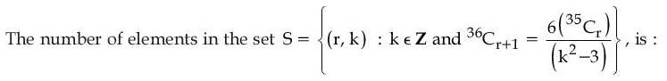
(1) 
(2) 
(3) 
Hint 1: Write 36Cr+1 in terms of 35Cr. There is a neat identity: nCr = (n/r)·n−1Cr−1.
Hint 2: 36Cr+1 = (36/(r+1))·35Cr. So the equation becomes 36/(r+1) = 6/(k2 − 3), i.e. r + 1 = 6(k2 − 3). Now remember 0 ≤ r ≤ 35.
What this tests: Binomial coefficient identities and integer solutions with a range restriction.
1. Use 36Cr+1 = (36/(r+1)) × 35Cr.
2. Cancel 35Cr: 36/(r+1) = 6/(k2 − 3), so r + 1 = 6(k2 − 3).
3. r + 1 is between 1 and 36, so k2 − 3 is between 1 and 6, and k2 is a perfect square: k2 = 4 or 9.
4. k2 = 4: r = 5, k = ±2. k2 = 9: r = 35, k = ±3.
5. Four pairs (r, k).
Answer: (2)
If this felt hard: A common slip is stopping at k = ±2 and missing r = 35 (k = ±3). Always write the allowed range of r. Revise the identity nCr = (n/r)·n−1Cr−1.
Claude’s answer: 2 · NTA final key: 2 · agrees · Answer recomputed with SymPy (tools/verify_pyq_solutions.py)
Q8 · Mathematics · MCQ · ID 6911218
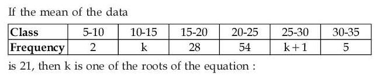
Hint 1: Use the class marks (midpoints) 7.5, 12.5, …, 32.5 and the mean formula Σfx/Σf.
Hint 2: Σf = 90 + 2k and Σfx = 1910 + 40k. Set Σfx = 21 × Σf.
What this tests: Mean of grouped data using class marks.
1. Class marks: 7.5, 12.5, 17.5, 22.5, 27.5, 32.5.
2. Σf = 2 + k + 28 + 54 + (k+1) + 5 = 90 + 2k.
3. Σfx = 15 + 12.5k + 490 + 1215 + 27.5(k+1) + 162.5 = 1910 + 40k.
4. Mean 21: 1910 + 40k = 21(90 + 2k) = 1890 + 42k, so k = 10.
5. Test the options: 2(100) − 19(10) − 10 = 0, so option 3 works.
Answer: (3)
If this felt hard: If the arithmetic got messy, keep a small table (x, f, fx). Revise 'Statistics': mean of grouped data.
Claude’s answer: 3 · NTA final key: 3 · agrees · Answer recomputed with SymPy (tools/verify_pyq_solutions.py)
Q9 · Mathematics · MCQ · ID 6911219
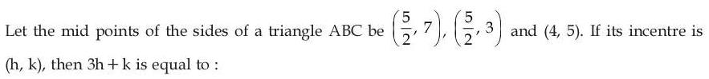
Hint 1: Adding the three midpoints gives A + B + C. Can you get each vertex from that?
Hint 2: Each vertex = (sum of midpoints) − 2 × (midpoint of the opposite side). Then use the incentre formula (aA + bB + cC)/(a + b + c), where a, b, c are the side lengths opposite A, B, C.
What this tests: Recovering a triangle from its midpoints; the incentre formula.
1. Sum of midpoints = (9, 15) = A + B + C.
2. Vertices: (9,15) − 2(5/2, 7) = (4, 1); (9,15) − 2(5/2, 3) = (4, 9); (9,15) − 2(4, 5) = (1, 5).
3. Sides: (4,1)–(4,9) = 8; (4,9)–(1,5) = 5; (1,5)–(4,1) = 5. The side opposite (1,5) is 8; the side opposite each of the other two is 5.
4. Incentre = [8(1,5) + 5(4,1) + 5(4,9)]/18 = (48/18, 90/18) = (8/3, 5).
5. 3h + k = 8 + 5 = 13.
Answer: (3)
If this felt hard: A common slip is weighting each vertex by the wrong side: the weight is the side opposite that vertex. Revise 'Straight Lines': centroid, incentre.
Claude’s answer: 3 · NTA final key: 3 · agrees · Answer recomputed with SymPy (tools/verify_pyq_solutions.py)
Q10 · Mathematics · MCQ · ID 69112110
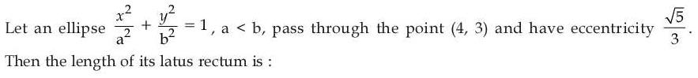
(2) 
Hint 1: a < b, so the major axis is along y. Which formula for eccentricity applies then?
Hint 2: e2 = 1 − a2/b2 = 5/9. Use this with 16/a2 + 9/b2 = 1. Latus rectum (major axis along y) = 2a2/b.
What this tests: Ellipse with a vertical major axis: eccentricity and latus rectum.
1. Major axis along y (since b > a): e2 = 1 − a2/b2 = 5/9, so a2 = 4b2/9.
2. The point (4, 3) lies on it: 16/a2 + 9/b2 = 1 gives 36/b2 + 9/b2 = 1, so b2 = 45 and a2 = 20.
3. Latus rectum = 2a2/b = 40/(3√5) = 8√5/3.
Answer: (4)
If this felt hard: The trap here is using e2 = 1 − b2/a2 and 2b2/a, which are only for a > b. Always check which denominator is bigger first. Revise 'Conic Sections': ellipse.
Claude’s answer: 4 · NTA final key: 4 · agrees · Answer recomputed with SymPy (tools/verify_pyq_solutions.py)
Q11 · Mathematics · MCQ · ID 69112111
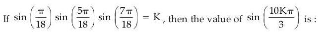
Hint 1: Write the angles in degrees: 10°, 50°, 70°. Is there an identity for sin θ · sin(60° − θ) · sin(60° + θ)?
Hint 2: sin θ · sin(60° − θ) · sin(60° + θ) = (1/4) sin 3θ. Put θ = 10° to get K.
What this tests: Product identity sin θ sin(60°−θ) sin(60°+θ) = ¼ sin 3θ.
1. π/18 = 10°, 5π/18 = 50° = 60° − 10°, 7π/18 = 70° = 60° + 10°.
2. Using the identity, K = (1/4) sin 30° = 1/8.
3. 10Kπ/3 = 10π/24 = 5π/12 = 75°.
4. sin 75° = sin(45° + 30°) = (√3 + 1)/(2√2).
Answer: (1)
If this felt hard: This identity (and its cos version) comes up often in JEE, so it's worth memorising. Revise 'Trigonometric Functions'.
Claude’s answer: 1 · NTA final key: 1 · agrees · Answer recomputed with SymPy (tools/verify_pyq_solutions.py)
Q12 · Mathematics · MCQ · ID 69112112
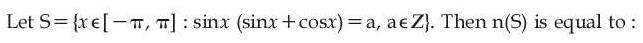
(1) 
(3) 
(4) 
Hint 1: First find which integer values a can actually take. Rewrite sin x(sin x + cos x) using double angles.
Hint 2: sin2x + sin x cos x = 1/2 + (sin 2x − cos 2x)/2, whose range is about [−0.21, 1.21]. So a = 0 or a = 1. Solve each in [−π, π].
What this tests: Range of a trigonometric expression; solving trig equations in an interval.
1. sin x(sin x + cos x) = 1/2 + (sin 2x − cos 2x)/2. Since sin 2x − cos 2x ranges over [−√2, √2], the expression lies in [(1−√2)/2, (1+√2)/2] ≈ [−0.21, 1.21]. So a = 0 or 1.
2. a = 0: sin x = 0 or tan x = −1. In [−π, π]: −π, 0, π, −π/4, 3π/4 (5 values).
3. a = 1: sin2x + sin x cos x = 1, so sin x cos x = cos2x, giving cos x = 0 or tan x = 1: −π/2, π/2, π/4, −3π/4 (4 values).
4. Total 9.
Answer: (4)
If this felt hard: A common slip is dividing by cos x and losing the cos x = 0 solutions, or forgetting the endpoints ±π. Revise 'Trigonometric Functions': general solutions.
Claude’s answer: 4 · NTA final key: 4 · agrees · Answer recomputed with SymPy (tools/verify_pyq_solutions.py)
Q13 · Mathematics · MCQ · ID 69112113
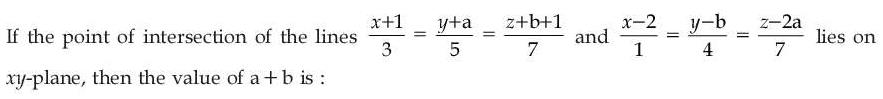
(1) 
(2) 
(3) 
Hint 1: Write a general point on each line using parameters t and s. On the xy-plane, z = 0.
Hint 2: Point on line 1: (−1+3t, −a+5t, −b−1+7t). Point on line 2: (2+s, b+4s, 2a+7s). Equate x, y, z and set z = 0.
What this tests: Intersection of two lines in 3D using parametric form.
1. Equal x: −1 + 3t = 2 + s, so s = 3t − 3.
2. z = 0 on both: 7t = b + 1 and 7s = −2a.
3. Equal y: −a + 5t = b + 4s.
4. Substituting: t = 5/7, s = −6/7, so a = 3 and b = 4.
5. a + b = 7.
Answer: (3)
If this felt hard: If the algebra got tangled, solve in order: get s from x, then a and b from z, then use y last. Revise 'Three Dimensional Geometry': lines.
Claude’s answer: 3 · NTA final key: 3 · agrees · Answer recomputed with SymPy (tools/verify_pyq_solutions.py)
Q14 · Mathematics · MCQ · ID 69112114
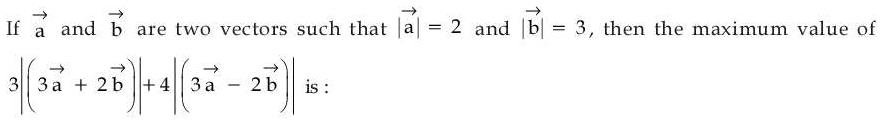
(4)
Hint 1: Let p = a·b. Write |3a + 2b|2 and |3a − 2b|2 in terms of p. Notice their sum.
Hint 2: |3a+2b|2 = 72 + 12p and |3a−2b|2 = 72 − 12p, which add up to 144. Now maximise 3u + 4v given u2 + v2 = 144 (Cauchy–Schwarz).
What this tests: Magnitudes via dot products; maximising a linear sum under u2 + v2 = constant.
1. |3a + 2b|2 = 9(4) + 4(9) + 12p = 72 + 12p; |3a − 2b|2 = 72 − 12p.
2. With u = |3a+2b| and v = |3a−2b|: u2 + v2 = 144.
3. Cauchy–Schwarz: 3u + 4v ≤ √(9+16)·√144 = 5 × 12 = 60.
4. Equality needs u : v = 3 : 4, which gives p = −1.68. That's allowed, since |p| ≤ 6.
Answer: (3), 60
If this felt hard: The key move is noticing u2 + v2 is constant. After that, either Cauchy–Schwarz or u = 12 cos θ, v = 12 sin θ works. Revise 'Vector Algebra' and maxima with the a cos θ + b sin θ form.
Claude’s answer: 3 · NTA final key: 3 · agrees · Answer recomputed with SymPy (tools/verify_pyq_solutions.py)
Q15 · Mathematics · MCQ · ID 69112115
(1)
(2)
(3)
(4)
Hint 1: A line perpendicular to two vectors is parallel to their cross product.
Hint 2: Direction d = (2,2,1) × (1,2,2) = (2, −3, 2). The foot of the perpendicular from O on the line r = (1,1,1) + t·d needs OP·d = 0.
What this tests: Cross product for a perpendicular direction; foot of perpendicular on a line.
1. d = (2,2,1) × (1,2,2) = (2, −3, 2).
2. P = (1+2t, 1−3t, 1+2t). OP ⊥ d: 2(1+2t) − 3(1−3t) + 2(1+2t) = 0, so 1 + 17t = 0 and t = −1/17.
3. P = (15/17, 20/17, 15/17), so a + b + c = 50/17.
4. 34(a + b + c) = 100.
Answer: (3)
If this felt hard: Revise 'Three Dimensional Geometry': foot of the perpendicular. Writing the general point first, then using the perpendicular condition, works every time.
Claude’s answer: 3 · NTA final key: 3 · agrees · Answer recomputed with SymPy (tools/verify_pyq_solutions.py)
Q16 · Mathematics · MCQ · ID 69112116
(1) 
(2) 
(3) 
(4) 
Hint 1: The denominator goes to 0 like (x − 2)2. What must the cubic look like near x = 2 for the limit to be finite?
Hint 2: Near x = 2: √(x−1) − 1 ≈ (x−2)/2 and ln(x−1) ≈ x − 2. So the cubic must have a double root at x = 2: p(2) = 0 and p′(2) = 0.
What this tests: Limits using standard approximations, and the double-root condition.
1. Denominator ≈ (x−2)/2 × (x−2) = (x−2)2/2.
2. For a finite limit, sin(p(x)) ≈ p(x) must also vanish like (x−2)2: p(2) = 0 and p′(2) = 0.
3. p(2) = 8 − 20 + 2a + b = 0 and p′(2) = 12 − 20 + a = 0, so a = 8 and b = −4.
4. p(x) = (x−2)2(x−1), so the limit = (x−1)/(1/2) at x = 2 = 2. So m = 2.
5. a + b + m = 8 − 4 + 2 = 6.
Answer: (2)
If this felt hard: If the 'double root' idea was new, revise how the order of zero of the denominator decides what the numerator needs. Revise 'Limits': standard limits for sin, ln and roots.
Claude’s answer: 2 · NTA final key: 2 · agrees · Answer recomputed with SymPy (tools/verify_pyq_solutions.py)
Q17 · Mathematics · MCQ · ID 69112117
(1)
(2)
(3)
(4)
Hint 1: Separate the variables: dy/y on one side, everything in x on the other.
Hint 2: ln y = ∫(2 + ln x) dx = 2x + x ln x − x + C. Use y(1) = e to find C.
What this tests: Variable separable differential equations; ∫ln x dx.
1. dy/y = (2 + ln x) dx.
2. Integrate: ln y = 2x + (x ln x − x) + C = x + x ln x + C.
3. At x = 1, y = e: 1 = 1 + 0 + C, so C = 0.
4. At x = e: ln y = e + e = 2e, so f(e) = e2e.
Answer: (3). Careful: option 4 is e raised to 2e, which looks similar.
If this felt hard: Remember ∫ln x dx = x ln x − x. Also read exponent options slowly: here two options differ only in where the e sits. Revise 'Differential Equations'.
Claude’s answer: 3 · NTA final key: 3 · agrees · Answer recomputed with SymPy (tools/verify_pyq_solutions.py)
Q18 · Mathematics · MCQ · ID 69112118
(1) 
(2) 
(3) 
(4) 
Hint 1: A critical point is where f′ = 0 OR where f′ doesn't exist. |g(x)| has a corner where g changes sign.
Hint 2: sin x/x is zero at ±π (corners for |·|). Also look for f′ = 0: x = 0 and where tan x = x.
What this tests: Critical points include points of non-differentiability; tan x = x roots.
1. Corners: sin x/x changes sign at x = ±π, so |sin x/x| has sharp corners there. 2 points.
2. x = 0: f is smooth with a maximum there (f′ = 0). 1 point.
3. Elsewhere f′ = 0 when x cos x − sin x = 0, i.e. tan x = x. In (π, 2π) this has one root (about 4.49), and by symmetry one in (−2π, −π). 2 points.
4. Total 5.
Answer: (3)
If this felt hard: The usual slip is counting only f′ = 0 and forgetting the corners at ±π. Revise 'Application of Derivatives': the definition of a critical point.
Claude’s answer: 3 · NTA final key: 3 · agrees · Answer recomputed with SymPy (tools/verify_pyq_solutions.py)
Q19 · Mathematics · MCQ · ID 69112119
(1)
(2)
(3)
(4)
Hint 1: [x] is constant on each unit interval. What is [x]! on [0,1), [1,2) and [2,3)?
Hint 2: [x]! = 1, 1, 2 on those intervals. So split the integral and divide the last part by 2.
What this tests: Definite integrals with the greatest integer function (split at integers).
1. On [0, 2): [x]! = 1. On [2, 3): [x]! = 2.
2. ∫ from 0 to 2 of (ex + e−x) dx = e2 − e−2.
3. (1/2)∫ from 2 to 3 = (1/2)(e3 − e−3 − e2 + e−2).
4. Add: (1/2)(e2 + e3 − e−2 − e−3).
Answer: (2)
If this felt hard: Note 0! = 1, so the first two intervals behave the same. Revise 'Definite Integrals': integrals with [x].
Claude’s answer: 2 · NTA final key: 2 · agrees · Answer recomputed with SymPy (tools/verify_pyq_solutions.py)
Q20 · Mathematics · MCQ · ID 69112120
(1)
(2)
(3)
(4)
Hint 1: This is variable separable: put (y + 1) with dy and the rest with dx.
Hint 2: dy/(y+1) = −cos x/(1 + sin x) dx. Both sides integrate to logarithms.
What this tests: Variable separable differential equation with ∫f′/f = ln f.
1. dy/(y+1) = −cos x dx/(1 + sin x).
2. ln(y + 1) = −ln(1 + sin x) + C. With y(0) = 0: C = 0.
3. So y + 1 = 1/(1 + sin x).
4. y = −1/2 means 1 + sin α = 2, so sin α = 1 and α = π/2.
Answer: (4)
If this felt hard: Spotting cos x/(1 + sin x) as f′/f is the key step. Revise 'Differential Equations' and 'Integrals': the ∫f′(x)/f(x) form.
Claude’s answer: 4 · NTA final key: 4 · agrees · Answer recomputed with SymPy (tools/verify_pyq_solutions.py)
Q21 · Mathematics · Numerical · ID 69112121
Hint 1: √(log0.6 t) needs log0.6 t ≥ 0. Since the base 0.6 is less than 1, what does that say about t?
Hint 2: log0.6 t ≥ 0 ⇔ 0 < t ≤ 1. So you need |2x − 5| ≤ |x2 − 4|, with x ≠ ±2 and x ≠ 5/2. Square both sides and factor.
What this tests: Domain with logs whose base is between 0 and 1, and modulus inequalities.
1. Base 0.6 < 1, so log0.6 t ≥ 0 means 0 < t ≤ 1, where t = |2x−5|/|x2−4|.
2. t > 0: x ≠ 5/2 (and x ≠ ±2 for the denominator).
3. t ≤ 1: (2x−5)2 ≤ (x2−4)2, which factors to (x−1)2(x2+2x−9) ≥ 0.
4. So x = 1, or x ≤ −1−√10, or x ≥ −1+√10 (≈ 2.16).
5. Domain: (−∞, −1−√10] ∪ {1} ∪ [−1+√10, 5/2) ∪ (5/2, ∞).
6. Sum = (−1−√10) + 1 + (−1+√10) + 5/2 + 5/2 = 4.
Answer: 4
If this felt hard: The trap is treating log0.6 like log10: for a base below 1 the inequality flips. Revise 'Relations and Functions': domain, and the properties of logarithms.
Claude’s answer: 4 · NTA final key: 4 · agrees · Answer recomputed with SymPy (tools/verify_pyq_solutions.py)
Q22 · Mathematics · Numerical · ID 69112122
Hint 1: If the sum of the first n terms is Sn, then ak = Sk − Sk−1.
Hint 2: ak = 6k3 − 6(k−1)3 = 6(3k2 − 3k + 1). Then find ak+1 − ak.
What this tests: Getting the nth term from the sum of n terms.
1. ak = 6k3 − 6(k−1)3 = 18k2 − 18k + 6.
2. ak+1 − ak = 18(2k+1) − 18 = 36k.
3. ((ak+1 − ak)/36)2 = k2.
4. Sum for k = 1 to 6: 1 + 4 + 9 + 16 + 25 + 36 = 91.
Answer: 91
If this felt hard: Revise 'Sequences and Series': an = Sn − Sn−1. Once you have ak, everything simplifies quickly.
Claude’s answer: 91 · NTA final key: 91 · agrees · Answer recomputed with SymPy (tools/verify_pyq_solutions.py)
Q23 · Mathematics · Numerical · ID 69112123
Hint 1: A quadratic is positive for all x when the leading coefficient is positive and the discriminant is negative.
Hint 2: a > 0 always here. You need (2√2 b)2 − 4ac < 0, i.e. ac > 2b2. Count triples for each b.
What this tests: Sign of a quadratic for all real x, plus counting outcomes.
1. Condition: 8b2 − 4ac < 0, i.e. ac > 2b2.
2. b = 1: ac > 2. Of the 16 pairs, only (1,1), (1,2), (2,1) fail, so 13 work.
3. b = 2: ac > 8: (3,3), (3,4), (4,3), (4,4), so 4 work.
4. b = 3 or 4: ac > 18 is impossible (max ac = 16).
5. Probability = 17/64, so m + n = 81.
Answer: 81
If this felt hard: If the counting was the slow part, fix b first and count the pairs (a, c). That's quicker than listing all 64. Revise 'Quadratic Equations' (sign of a quadratic) and 'Probability'.
Claude’s answer: 81 · NTA final key: 81 · agrees · Answer recomputed with SymPy (tools/verify_pyq_solutions.py)
Q24 · Mathematics · Numerical · ID 69112124
Hint 1: Equal intercepts on both axes with the centre in the first quadrant means the centre is (h, h). Meeting the axes in exactly three points means one point is shared. Which point could that be?
Hint 2: The circle passes through the origin, so r2 = 2h2. Then use (half chord)2 + (distance from centre to line)2 = r2.
What this tests: Circle through the origin with equal intercepts; chord length.
1. Centre (h, h). Three axis points means it passes through O (cutting each axis at 0 and 2h), so r2 = 2h2.
2. Distance from (h, h) to x + y = 1 is |2h − 1|/√2. Half chord = √14/2.
3. 2h2 = (2h − 1)2/2 + 14/4. Multiply by 4: 8h2 = 2(4h2 − 4h + 1) + 14, so 8h = 16 and h = 2.
4. r2 = 2(4) = 8.
Answer: 8
If this felt hard: The tricky part is turning 'exactly three points' into 'passes through the origin'. Draw a quick sketch when a condition sounds unusual. Revise 'Conic Sections': circle, length of a chord.
Claude’s answer: 8 · NTA final key: 8 · agrees · Answer recomputed with SymPy (tools/verify_pyq_solutions.py)
Q25 · Mathematics · Numerical · ID 69112125
Hint 1: Look at the two integrands. Are they inverse functions of each other?
Hint 2: If y = log2(x2+4), then x = √(2y − 4). As x goes from 0 to 2√3, y goes from 2 to 4. For inverse functions, ∫f + ∫f−1 = b·f(b) − a·f(a).
What this tests: Integral of a function plus its inverse (area of a rectangle).
1. f(x) = log2(x2 + 4) is increasing on [0, 2√3], with f(0) = 2 and f(2√3) = log2 16 = 4.
2. Its inverse is f−1(y) = √(2y − 4) on [2, 4]: exactly the second integrand.
3. The two integrals fill the rectangle: α = (2√3)(4) − (0)(2) = 8√3.
4. α2 = 192.
Answer: 192
If this felt hard: When two hard-looking integrals are added, check whether they are inverses before computing. A small sketch of the area makes the rule obvious. Revise 'Definite Integrals' (properties) and 'Inverse functions'.
Claude’s answer: 192 · NTA final key: 192 · agrees · Answer recomputed with SymPy (tools/verify_pyq_solutions.py)
Q26 · Physics · MCQ · ID 69112126
(1) 
(2) 
(3)
(4) 
Hint 1: What physical quantity is (1/2)ε0E2? Think of the energy stored in a capacitor.
Hint 2: It is energy per unit volume. Energy is [ML2T−2], volume is [L3].
What this tests: Dimensions using a known physical meaning (energy density).
1. (1/2)ε0E2 = energy density = energy/volume.
2. [ML2T−2]/[L3] = [ML−1T−2], so a = 1, b = −1, c = −2.
3. 2a − b + c = 2 + 1 − 2 = 1.
Answer: (2)
If this felt hard: Recognising a combination's meaning is faster than working out the dimensions of ε0. Revise 'Units and Measurements' and 'Electrostatic Potential and Capacitance' (energy density).
Claude’s answer: 2 · NTA final key: 2 · agrees · Answer recomputed by script (tools/verify_pyq_solutions.py)
Q27 · Physics · MCQ · ID 69112127
(1)
(2)
(3)
(4) 
Hint 1: Write Y = FL/(Aℓ) with A = πd2/4. Which errors add up in ΔY/Y?
Hint 2: ΔY/Y = 2(Δd/d) + ΔL/L + Δℓ/ℓ (the load error is ignored). Then ΔY = (ΔY/Y) × Y.
What this tests: Propagation of errors in a product/quotient formula.
1. Y = 4FL/(πd2ℓ) = 4(100)(1.5)/(π × (8×10−4)2 × 5×10−3) ≈ 5.97 × 1010 N/m2.
2. ΔY/Y = 2(0.001/0.08) + 0.1/150 + 0.001/0.5 = 0.025 + 0.00067 + 0.002 ≈ 0.0277.
3. ΔY ≈ 0.0277 × 5.97×1010 ≈ 1.65 × 109 N/m2.
Answer: (2), α = 1.65
If this felt hard: Common slips: forgetting the factor 2 for d2, or giving the fractional error instead of the absolute error ΔY. Revise 'Units and Measurements': errors.
Claude’s answer: 2 · NTA final key: 2 · agrees · Answer recomputed by script (tools/verify_pyq_solutions.py)
Q28 · Physics · MCQ · ID 69112128
(1)
(2) 
(3)
(4) 
Hint 1: The velocity depends on position, not time. How is acceleration found for a velocity field?
Hint 2: ax = vx∂vx/∂x, ay = vy∂vy/∂y, az = vz∂vz/∂z (each component depends only on its own coordinate here).
What this tests: Acceleration when velocity is given as a function of position (a = v dv/dx).
1. ax = (−x)(−1) = x.
2. ay = (2y)(2) = 4y.
3. az = (−z)(−1) = z.
4. At (1, 2, 4): a = (1, 8, 4), so |a| = √(1 + 64 + 16) = 9 m/s2.
Answer: (2)
If this felt hard: The trap answer 0 comes from differentiating with respect to time directly. When v depends on x, use a = v dv/dx. Revise 'Motion in a Straight Line' (a = v dv/dx).
Claude’s answer: 2 · NTA final key: 2 · agrees · Answer recomputed by script (tools/verify_pyq_solutions.py)
Q29 · Physics · MCQ · ID 69112129
(1)
(2)
(3)
(4)
Hint 1: Differentiate r once for v and again for a. Then check each statement with t = 1.
Hint 2: At t = 1: r = (10, 5), v = (20, 15), a = (20, 30). p = mv, F = ma, L = r × p, τ = r × F (z-component = xPy − yPx).
What this tests: Momentum, force, angular momentum and torque from a position vector.
1. v = (20t, 15t2) and a = (20, 30t). At t = 1: r = (10, 5), v = (20, 15), a = (20, 30).
2. p = 0.1v = (2, 1.5). A is correct.
3. F = 0.1a = (2, 3). B is correct.
4. L = r × p = 10(1.5) − 5(2) = 5 k̂, not 15. C is wrong.
5. τ = r × F = 10(3) − 5(2) = 20 k̂. D is correct.
Answer: (4), A, B and D
If this felt hard: If L came out wrong, practise the 2D cross product: (x, y) × (px, py) = xpy − ypx. Revise 'System of Particles and Rotational Motion'.
Claude’s answer: 4 · NTA final key: 4 · agrees · Answer recomputed by script (tools/verify_pyq_solutions.py)
Q30 · Physics · MCQ · ID 69112130
(1) 
(2) 
(3) 
(4)
Hint 1: By Kepler's third law, how does T depend on the orbit radius and the star's mass?
Hint 2: T = 2π√(r3/GM). Take the ratio: T2/T1 = √[(r2/r1)3 × (M1/M2)].
What this tests: Time period of an orbit, T2 ∝ r3/M.
1. T ∝ √(r3/M).
2. T2/T1 = √[(2R/R)3 × (2M/4M)] = √(8 × 1/2) = √4 = 2.
Answer: (2)
If this felt hard: A common slip is forgetting that the star's mass changes too, or flipping the mass ratio. Revise 'Gravitation': orbital period.
Claude’s answer: 2 · NTA final key: 2 · agrees · Answer recomputed by script (tools/verify_pyq_solutions.py)
Q31 · Physics · MCQ · ID 69112131
(1) 
(2) 
(3)
(4)
Hint 1: Angular acceleration is the second derivative of θ with respect to time.
Hint 2: ω = dθ/dt = t3/2 − t2. Differentiate once more and put t = 10.
What this tests: Angular kinematics by differentiation.
1. ω = dθ/dt = 20t3/40 − t2 = t3/2 − t2.
2. α = dω/dt = 3t2/2 − 2t.
3. At t = 10: 150 − 20 = 130 rad/s2.
Answer: (3)
If this felt hard: 150 is the trap if you drop the −2t term. Revise 'Motion in a Plane' / rotational kinematics.
Claude’s answer: 3 · NTA final key: 3 · agrees · Answer recomputed by script (tools/verify_pyq_solutions.py)
Q32 · Physics · MCQ · ID 69112132
(1)
(2)
(3) 
(4) 
Hint 1: Look at the figure: the slab covers the whole plate area but only half the gap. Are the two parts in series or in parallel?
Hint 2: They are layers one above the other, so in series: C′ = ε0A/(t/K + (d − t)) with t = d/2.
What this tests: Capacitor partly filled with a dielectric (series layers).
1. The dielectric layer (thickness d/2) and the air layer (thickness d/2) are in series.
2. C′ = ε0A/(d/(2K) + d/2) = ε0A/(d(1/10 + 1/2)) = ε0A/(0.6d) = (5/3)C.
3. Increase = (5/3 − 1) × 100% = 66.67%.
Answer: (2)
If this felt hard: The trap 200% comes from treating the halves as side by side (in parallel), and 400% from using KC. Check the figure: a horizontal layer is series, a vertical split is parallel. Revise 'Electrostatic Potential and Capacitance'.
Claude’s answer: 2 · NTA final key: 2 · agrees · Answer recomputed by script (tools/verify_pyq_solutions.py)
Q33 · Physics · MCQ · ID 69112133
(1)
(2)
(3)
(4)
Hint 1: For a diatomic gas, what are Cv and Cp?
Hint 2: At constant pressure: ΔQ = nCpΔT, ΔU = nCvΔT, ΔW = nRΔT, with Cv = 5R/2 and Cp = 7R/2.
What this tests: First law at constant pressure; Cp and Cv for a diatomic gas.
1. Diatomic: Cv = 5R/2, Cp = 7R/2.
2. ΔQ : ΔU : ΔW = 7/2 : 5/2 : 1 = 7 : 5 : 2.
Answer: (4)
If this felt hard: Revise 'Thermodynamics' and 'Kinetic Theory' (degrees of freedom: diatomic f = 5). The options are just reorderings, so write ΔQ, ΔU, ΔW in the order the question asks.
Claude’s answer: 4 · NTA final key: 4 · agrees · Answer recomputed by script (tools/verify_pyq_solutions.py)
Q34 · Physics · MCQ · ID 69112134
(1)
(2) 
(3)
(4)
Hint 1: Joined by a wire, the spheres reach the same potential. How does charge relate to radius then?
Hint 2: V = kQ/r is the same, so Q ∝ r. The surface field E = kQ/r2.
What this tests: Charge sharing between connected conductors; field at the surface.
1. Same potential: Q1/r1 = Q2/r2, so Q ∝ r.
2. E = kQ/r2 ∝ r/r2 = 1/r.
3. ES1/ES2 = r2/r1 = 18/8 = 9/4.
Answer: (4)
If this felt hard: The trap 4/9 comes from flipping the ratio: the smaller sphere has the larger field. Revise 'Electric Charges and Fields' and 'Electrostatic Potential'.
Claude’s answer: 4 · NTA final key: 4 · agrees · Answer recomputed by script (tools/verify_pyq_solutions.py)
Q35 · Physics · MCQ · ID 69112135
(1) 
(2)
(3) 
(4)
Hint 1: Compare with y = A cos(ωt − kx). What are ω and k here?
Hint 2: ω = 200π rad/s and k = π/150 per cm. Wave speed v = ω/k. Watch the units: x is in cm.
What this tests: Wave speed from the wave equation, v = ω/k.
1. ω = 200π, k = π/150 cm−1.
2. v = ω/k = 200π × 150/π = 30000 cm/s.
3. 30000 cm/s = 300 m/s.
Answer: (4)
If this felt hard: The units step is where most slips happen (cm to m). Revise 'Waves'.
Claude’s answer: 4 · NTA final key: 4 · agrees · Answer recomputed by script (tools/verify_pyq_solutions.py)
Q36 · Physics · MCQ · ID 69112136
(1) 
(2)
(3)
(4)
Hint 1: Point x is on the axis of one dipole and on the equatorial line of the other. Which is which?
Hint 2: Axial field: 2kp/r3. Equatorial field: kp/r3. They are perpendicular, and tan 60° = EB/EA.
What this tests: Fields on the axial and equatorial lines of a short dipole.
1. A lies along Ox, so x is on A's axis: EA = 2kp1/r3, along Ox.
2. B is perpendicular to Ox, so x is on B's equatorial line: EB = kp2/r3, perpendicular to Ox.
3. tan 60° = EB/EA = p2/(2p1) = √3, so p2/p1 = 2√3.
Answer: (2)
If this felt hard: The trap √3 comes from forgetting the factor 2 in the axial field. Revise 'Electric Charges and Fields': dipole fields.
Claude’s answer: 2 · NTA final key: 2 · agrees · Answer recomputed by script (tools/verify_pyq_solutions.py)
Q37 · Physics · MCQ · ID 69112137
(1)
(2)
(3)
(4)
Hint 1: Read the output graph: what happens in the positive half-cycle, and what happens in the negative half-cycle?
Hint 2: The output is held at +5 V in one half and at about −5 V in the other. The branch already drawn clips one side. What would clip the other side?
What this tests: Zener diode clipping circuits.
1. The output is flat at +5 V in the positive half and at about −5 V in the negative half: a two-sided clipper.
2. The drawn branch (ideal diode + 5 V Zener) conducts in one half-cycle once the Zener breaks down, holding the output at 5 V.
3. To clip the other half, X–Y needs the same pair the other way round: an ideal diode and a Zener in series, opposite to the first branch.
Answer: (2)
If this felt hard: If this felt hard, revise how a forward diode in series with a reverse Zener behaves: it conducts only once the voltage passes VZ. Revise 'Semiconductor Electronics'.
Claude’s answer: 2 · NTA final key: 2 · agrees · Theory question: not computable, needs a teacher’s review
Note: The figure's voltage scale is rough. A teacher should confirm the reading of part (C).
Q38 · Physics · MCQ · ID 69112138
(1) 
(2)
(3) 
(4)
Hint 1: Power dissipated = ε2/R. Which factors change ε, and which change R?
Hint 2: ε = NA(dB/dt). The wire length is N × (circumference) ∝ N√A, so R = ρ(length)/(πr2) ∝ N√A/r2.
What this tests: Faraday's law combined with how resistance depends on wire length and thickness.
1. ε ∝ NA, so ε2 ∝ N2A2.
2. R ∝ (wire length)/(wire cross-section) ∝ N√A/r2.
3. P = ε2/R ∝ N A3/2 r2.
4. New/old = 2 × (2)3/2 × 9 = 36√2, so √2·α = 36√2 and α = 36.
Answer: (1)
If this felt hard: The usual slip is keeping R the same. A bigger coil needs more wire, and a thicker wire has less resistance. Revise 'Electromagnetic Induction' and 'Current Electricity' (R = ρL/A).
Claude’s answer: 1 · NTA final key: 1 · agrees · Answer recomputed by script (tools/verify_pyq_solutions.py)
Q39 · Physics · MCQ · ID 69112139
(1)
(2)
(3)
(4)
Hint 1: Break each shape into straight wires and a semicircle. For each straight wire, where is the centre relative to it?
Hint 2: Semi-infinite wire with its end level with the point: μ0I/(4πr). A wire whose line passes through the point: 0. Semicircle: μ0I/(4r).
What this tests: Magnetic field of straight wire segments and arcs (Biot–Savart).
1. (I): two semi-infinite wires, each at distance r and ending level with P, each give μ0I/(4πr), both in the same direction. The semicircle adds μ0I/(4r). B1 = (μ0I/4πr)(2 + π).
2. (II): the incoming wire gives μ0I/(4πr), the semicircle gives μ0I/(4r), and the outgoing wire lies on a line through Q, giving 0. B2 = (μ0I/4πr)(1 + π).
3. B1/B2 = (2 + π)/(1 + π).
Answer: (1)
If this felt hard: Revise 'Moving Charges and Magnetism': the semi-infinite wire result μ0I/(4πr) and the arc result μ0Iθ/(4πr). Check the direction of each part before adding.
Claude’s answer: 1 · NTA final key: 1 · agrees · Theory question: not computable, needs a teacher’s review
Note: Figure (II) is drawn loosely. The solution assumes the outgoing straight wire lies on a line through Q, which is the only reading that gives one of the options.
Q40 · Physics · MCQ · ID 69112140
(1)
(2)
(3)
(4)
Hint 1: For a thin prism, what is the deviation? At minimum deviation, how are i and δ related?
Hint 2: Thin prism: δ = (μ − 1)A. At minimum deviation: i = (A + δ)/2.
What this tests: Thin prism deviation and the minimum deviation condition.
1. δmin = (1.5 − 1)A = A/2.
2. i = (A + δ)/2 = (A + A/2)/2 = 3A/4.
3. i : δ = (3A/4) : (A/2) = 3 : 2.
Answer: (2)
If this felt hard: Revise 'Ray Optics': prism formula. Remember at minimum deviation r = A/2 and i = (A + δ)/2.
Claude’s answer: 2 · NTA final key: 2 · agrees · Answer recomputed by script (tools/verify_pyq_solutions.py)
Q41 · Physics · MCQ · ID 69112141
(1)
(2)
(3)
(4)
Hint 1: This is refraction at a single curved surface. Note C is on the object's side: what is the sign of R?
Hint 2: Use μ2/v − μ1/u = (μ2 − μ1)/R with u = −40 cm and R = −20 cm. Magnification m = μ1v/(μ2u).
What this tests: Refraction at a spherical surface: sign convention and magnification.
1. u = −40 cm, R = −20 cm (centre on the incoming side).
2. 1.54/v + 1/40 = 0.54/(−20), so v ≈ −29.6 cm (virtual, on the same side).
3. m = (1)(−29.6)/(1.54 × −40) ≈ 0.48, so the image is ≈ 0.96 cm tall.
4. The nearest option is 1 cm (with μ = 1.5 it is exactly 1 cm).
Answer: (1)
If this felt hard: Sign of R is where most slips happen: R is negative when the centre is on the side the light comes from. Revise 'Ray Optics': refraction at spherical surfaces.
Claude’s answer: 1 · NTA final key: 1 · agrees · Answer recomputed by script (tools/verify_pyq_solutions.py)
Note: The exact value with μ = 1.54 is 0.96 cm; NTA's key takes the nearest option, 1 cm.
Q42 · Physics · MCQ · ID 69112142
(1) 
(2) 
(3) 
(4) 
Hint 1: Write Einstein's equation eV = hc/λ − φ for both wavelengths.
Hint 2: 3eV0 = hc/λ − φ and eV0 = hc/(2λ) − φ. Subtract to find eV0, then find φ. Threshold wavelength λ0 = hc/φ.
What this tests: Photoelectric equation with two wavelengths.
1. Subtract the two equations: 2eV0 = hc/λ − hc/(2λ) = hc/(2λ), so eV0 = hc/(4λ).
2. φ = hc/(2λ) − eV0 = hc/(2λ) − hc/(4λ) = hc/(4λ).
3. λ0 = hc/φ = 4λ, so α = 4.
Answer: (2)
If this felt hard: Revise 'Dual Nature of Matter and Radiation'. Two equations, two unknowns: subtracting removes φ.
Claude’s answer: 2 · NTA final key: 2 · agrees · Answer recomputed by script (tools/verify_pyq_solutions.py)
Q43 · Physics · MCQ · ID 69112143
(1)
(2) 
(3)
(4) 
Hint 1: Electric force = qE. Magnetic force = qvB. How are E and B related in an EM wave?
Hint 2: B0 = E0/c, so FE/FB = E0/(vB0) = c/v.
What this tests: Electric and magnetic forces in an EM wave, B = E/c.
1. FE = eE0 and FB = evB0 = evE0/c.
2. FE/FB = c/v = (3 × 108)/(1.5 × 106) = 200.
Answer: (1)
If this felt hard: Revise 'Electromagnetic Waves': E0 = cB0. The 300 in Ey is a distractor: it cancels.
Claude’s answer: 1 · NTA final key: 1 · agrees · Answer recomputed by script (tools/verify_pyq_solutions.py)
Q44 · Physics · MCQ · ID 69112144
(1)
(2)
(3)
(4)
Hint 1: Bohr's quantisation: L = nh/(2π). What is n?
Hint 2: 3h/π = nh/(2π) gives n = 6. Then En = −13.6/n2 eV.
What this tests: Bohr model: angular momentum quantisation and energy levels.
1. nh/(2π) = 3h/π, so n = 6.
2. E = −13.6/36 ≈ −0.38 eV.
Answer: (3)
If this felt hard: The trap −0.85 (n = 4) or −1.51 (n = 3) comes from equating 3h/π with nh/π. Write L = nh/2π every time. Revise 'Atoms'.
Claude’s answer: 3 · NTA final key: 3 · agrees · Answer recomputed by script (tools/verify_pyq_solutions.py)
Q45 · Physics · MCQ · ID 69112145
(1)
(2) 
(3) 
(4) 
Hint 1: Volume stays the same when the drop breaks up. What is the radius of each droplet?
Hint 2: 512r3 = R3, so r = R/8. Surface energy change = T × (increase in area) = T × 4π(512r2 − R2).
What this tests: Surface energy when a drop splits into droplets.
1. R = 1 mm = 10−3 m and r = R/8.
2. New area − old area = 4π(512 × R2/64 − R2) = 4πR2(8 − 1) = 28π × 10−6 m2.
3. ΔE = 0.08 × 28π × 10−6 ≈ 7.0 × 10−6 J.
Answer: (2), α = 7
If this felt hard: Common slip: using the diameter (2 mm) as the radius, which gives 4 times the answer. Revise 'Mechanical Properties of Fluids': surface tension.
Claude’s answer: 2 · NTA final key: 2 · agrees · Answer recomputed by script (tools/verify_pyq_solutions.py)
Q46 · Physics · Numerical · ID 69112146
Hint 1: The central maximum spans from the first minimum on one side to the first minimum on the other.
Hint 2: First minimum: sin θ ≈ θ = λ/a. Angular width = 2λ/a in radians. Then convert to degrees.
What this tests: Single slit diffraction: width of the central maximum.
1. 2λ/a = 2 × 628 × 10−9/(0.2 × 10−3) = 6.28 × 10−3 rad.
2. In degrees: 6.28 × 10−3 × 180/π = 0.36° = 36 × 10−2 degrees.
Answer: 36
If this felt hard: Common slips: using λ/a (half-width) or forgetting to convert radians to degrees. Revise 'Wave Optics': single slit.
Claude’s answer: 36 · NTA final key: 36 · agrees · Answer recomputed by script (tools/verify_pyq_solutions.py)
Note: Exact value 35.98 (with π = 3.14 it is exactly 36); JEE numerical answers are integers.
Q47 · Physics · Numerical · ID 69112147
Hint 1: Adiabatic process: find γ first, then the final volume.
Hint 2: γ = Cp/Cv = 1.5. P1V1γ = P2V2γ. Work done = (P1V1 − P2V2)/(γ − 1).
What this tests: Work in an adiabatic expansion.
1. γ = 3R/2R = 1.5.
2. V2 = V1(P1/P2)1/γ = 0.15 × 82/3 = 0.15 × 4 = 0.6 m3.
3. W = (8×105 × 0.15 − 1×105 × 0.6)/0.5 = (1.2×105 − 0.6×105)/0.5 = 1.2 × 105 J = 120 kJ.
Answer: 120
If this felt hard: The temperature (140 °C) is not needed. Don't let extra data distract you. Revise 'Thermodynamics': adiabatic work.
Claude’s answer: 120 · NTA final key: 120 · agrees · Answer recomputed by script (tools/verify_pyq_solutions.py)
Q48 · Physics · Numerical · ID 69112148
Hint 1: Magnetic force F = q(v × B). Compute the cross product first.
Hint 2: v × B = (1, −2, 3) × (2, 3, −5). Use the determinant with i, j, k.
What this tests: Lorentz force using the vector cross product.
1. v × B = i[(−2)(−5) − (3)(3)] − j[(1)(−5) − (3)(2)] + k[(1)(3) − (−2)(2)] = (1, 11, 7).
2. |v × B| = √(1 + 121 + 49) = √171.
3. F = 10−6 × √171 N, so α = 171.
Answer: 171
If this felt hard: Sign slips in the j-component are the usual error: remember the minus sign in front. Revise 'Moving Charges and Magnetism' and the vector cross product.
Claude’s answer: 171 · NTA final key: 171 · agrees · Answer recomputed by script (tools/verify_pyq_solutions.py)
Q49 · Physics · Numerical · ID 69112149
Hint 1: Stress at a point = tension there / area. What hangs below the point l/3 from the top?
Hint 2: Below that point: the weight W plus 2/3 of the wire (weight 2w/3).
What this tests: Stress in a hanging wire that has its own weight.
1. Tension at l/3 from the top = W + (2/3)w.
2. Stress = W/A + (2/3)(w/A).
3. Compare with W/A + (2/γ)(w/A): γ = 3.
Answer: 3
If this felt hard: The trap is taking the wire above the point (w/3) instead of below it (2w/3). Revise 'Mechanical Properties of Solids'.
Claude’s answer: 3 · NTA final key: 3 · agrees · Answer recomputed by script (tools/verify_pyq_solutions.py)
Q50 · Physics · Numerical · ID 69112150
Hint 1: By Archimedes, the extra weight floated equals the weight of extra water pushed aside.
Hint 2: Extra submerged volume = 10 × 10 × 3.87 cm3. Its mass in water = the coin's mass.
What this tests: Archimedes' principle for floating bodies.
1. Extra volume submerged = 10 × 10 × 3.87 = 387 cm3.
2. Water displaced = 387 g, which equals the coin's mass.
3. The wood's density isn't needed.
Answer: 387
If this felt hard: Revise 'Mechanical Properties of Fluids': buoyancy. Extra data (wood density) is a common distraction in JEE.
Claude’s answer: 387 · NTA final key: 387 · agrees · Answer recomputed by script (tools/verify_pyq_solutions.py)
Q51 · Chemistry · MCQ · ID 69112151
(1)
(2)
(3)
(4)
Hint 1: Write the balanced equation for iron reacting with steam to form Fe3O4.
Hint 2: 3Fe + 4H2O → Fe3O4 + 4H2. 18 g of steam is 1 mol.
What this tests: Stoichiometry from a balanced equation.
1. 3Fe + 4H2O → Fe3O4 + 4H2.
2. 4 mol H2O react with 3 mol Fe, so 1 mol H2O reacts with 3/4 mol Fe.
3. Mass of Fe = 0.75 × 56 = 42 g.
Answer: (4)
If this felt hard: The trap 21 g comes from a wrong mole ratio. Always balance first. Revise 'Some Basic Concepts of Chemistry': mole concept.
Claude’s answer: 4 · NTA final key: 4 · agrees · Answer recomputed by script (tools/verify_pyq_solutions.py)
Q52 · Chemistry · MCQ · ID 69112152
(1)
(2)
(3)
(4)
Hint 1: Li2+ has one electron, so it is hydrogen-like. How does ionisation energy depend on Z?
Hint 2: IE = Z2 × IE(H) for a one-electron species from n = 1.
What this tests: Energy of hydrogen-like species, E ∝ Z2/n2.
1. Li2+: Z = 3, one electron in n = 1.
2. IE = 32 × 2.18 × 10−18 = 1.962 × 10−17 J per atom.
Answer: (3)
If this felt hard: The trap 6.54 × 10−18 comes from multiplying by Z instead of Z2. Revise 'Structure of Atom': Bohr energies.
Claude’s answer: 3 · NTA final key: 3 · agrees · Answer recomputed by script (tools/verify_pyq_solutions.py)
Q53 · Chemistry · MCQ · ID 69112153
(1) 
(2) 
(3) 
(4) 
Hint 1: Use molecular orbital theory: work out the bond order and the unpaired electrons for each species.
Hint 2: Bond orders: O2+ 2.5, O2 2, O2− 1.5, O22− 1. Count electrons in the π* orbitals for the unpaired ones.
What this tests: MO theory for O2 and its ions: bond order, bond length, magnetism.
1. Higher bond order means a shorter bond, so the length order O2+ < O2 < O2− < O22− is right. Statement I is true.
2. Unpaired electrons: O2 2, O2+ 1, O2− 1, O22− 0.
3. O2+ and O2− both have 1, so 'O2+ > O2−' is false. Statement II is false.
Answer: (3)
If this felt hard: Watch strict '>' signs in order statements: equal values make them false. Revise 'Chemical Bonding': the MO diagram of O2.
Claude’s answer: 3 · NTA final key: 3 · agrees · Theory question: not computable, needs a teacher’s review
Q54 · Chemistry · MCQ · ID 69112154
(1)
(2)
(3)
(4)
Hint 1: Target: 2Al(s) + 3Cl2(g) → Al2Cl6(s). Heat written on the product side means ΔH is negative.
Hint 2: Combine (i) + 3×(ii) + 6×(iii) − (iv) so that HCl, H2 and Al2Cl6(aq) cancel.
What this tests: Hess's law; reading heat written as a product.
1. ΔH values: (i) −1200, (ii) −164, (iii) −83, (iv) −663 kJ.
2. (i) + 3(ii) + 6(iii) − (iv) gives 2Al + 3Cl2 → Al2Cl6(s).
3. ΔHf = −1200 − 492 − 498 + 663 = −1527 kJ/mol.
Answer: (4)
If this felt hard: The usual slips are the sign of (iv) when reversing it, or forgetting the 6× for HCl. Revise 'Thermodynamics' (Chemistry): Hess's law.
Claude’s answer: 4 · NTA final key: 4 · agrees · Answer recomputed by script (tools/verify_pyq_solutions.py)
Q55 · Chemistry · MCQ · ID 69112155
(1)
(2)
(3)
(4)
Hint 1: Find the van't Hoff factor i from the freezing-point depression first.
Hint 2: m = 0.5 mol/kg. ΔTf = iKfm gives i. For a weak acid i = 1 + α, and Ka = cα2/(1 − α).
What this tests: Colligative properties linked to the degree of dissociation.
1. Moles = 19.5/78 = 0.25 in 0.5 kg, so m = 0.5.
2. 1 = i × 1.86 × 0.5, so i = 1.075 and α = 0.075.
3. Ka = 0.5 × (0.075)2/0.925 ≈ 3 × 10−3.
Answer: (4)
If this felt hard: Revise 'Solutions' (van't Hoff factor) and 'Equilibrium' (Ka = cα2/(1−α)). Keeping α to 2–3 significant figures avoids wrong-power answers.
Claude’s answer: 4 · NTA final key: 4 · agrees · Answer recomputed by script (tools/verify_pyq_solutions.py)
Q56 · Chemistry · MCQ · ID 69112156
(1)
(2)
(3)
(4)
Hint 1: Write Ksp in terms of solubility s for each salt.
Hint 2: Ag2CrO4: Ksp = (2s)2s = 4s3. AgBr: Ksp = s2.
What this tests: Solubility product for salts of different types.
1. Ag2CrO4: 4s3 = 32x, so s3 = 8x and s = 2x1/3.
2. AgBr: s2 = 4y, so s = 2√y.
3. Ratio = 2x1/3/(2√y) = ∛x/√y.
Answer: (4)
If this felt hard: The trap is writing Ksp = 2s·s for Ag2CrO4: the 2 Ag+ gives (2s)2. Revise 'Equilibrium': solubility product.
Claude’s answer: 4 · NTA final key: 4 · agrees · Answer recomputed by script (tools/verify_pyq_solutions.py)
Q57 · Chemistry · MCQ · ID 69112157
(1)
(2)
(3)
(4)
Hint 1: Which couple has the higher reduction potential? That one is reduced at the cathode.
Hint 2: AgBr/Ag (+0.07 V) is the cathode; Fe/Fe(OH)2 (−0.88 V) is the anode. E°cell = E°cathode − E°anode.
What this tests: Writing a galvanic cell from two half-cells.
1. Cathode: AgBr + e− → Ag + Br−. Anode: Fe + 2OH− → Fe(OH)2 + 2e−.
2. Overall: Fe + 2OH− + 2AgBr → Fe(OH)2 + 2Ag + 2Br−. That's option 1.
3. E°cell = 0.07 − (−0.88) = +0.95 V (not −0.95). Fe is oxidised, not reduced. E°cell is intensive.
Answer: (1)
If this felt hard: Revise 'Electrochemistry': the higher E° is reduced; E°cell doesn't change when you multiply a half-reaction (intensive).
Claude’s answer: 1 · NTA final key: 1 · agrees · Theory question: not computable, needs a teacher’s review
Q58 · Chemistry · MCQ · ID 69112158
(1)
(2)
(3)
(4)
Hint 1: Write the integrated rate laws. When does [A] reach zero in each case?
Hint 2: Zero order: [A] = [A]0 − kt. First order: [A] = [A]0e−kt.
What this tests: Integrated rate laws for zero and first order reactions.
1. Zero order: [A] = 0 at t = [A]0/k. Since t1/2 = [A]0/(2k), t100% = 2t1/2.
2. First order: e−kt never becomes 0, so t100% is infinite (the option writes this as (t1/2)∞).
Answer: (2)
If this felt hard: Revise 'Chemical Kinetics': half-life for zero order depends on [A]0, while first order never reaches completion.
Claude’s answer: 2 · NTA final key: 2 · agrees · Theory question: not computable, needs a teacher’s review
Q59 · Chemistry · MCQ · ID 69112159
(1)
(2) 
(3)
(4) 
Hint 1: Check each statement on its own. For Statement I, recall the trend of first IE across period 3.
Hint 2: IE increases across a period: Na < Mg < Cl < Ar. For Statement II, think about which element's third electron comes from a noble-gas core.
What this tests: Periodic trends in ionisation enthalpy.
1. First IE (kJ/mol): Na 496, Mg 738, Cl 1251, Ar 1521. The order in Statement I is reversed, so it is false.
2. Ca → Ca3+ removes an electron from the [Ar] core, so its third IE is very high (about 4912 kJ/mol), more than for Al, Fe or B. Statement II is true.
Answer: (4)
If this felt hard: Revise 'Classification of Elements and Periodicity': IE rises across a period, and it jumps hugely once you break into a noble-gas core.
Claude’s answer: 4 · NTA final key: 4 · agrees · Theory question: not computable, needs a teacher’s review
Q60 · Chemistry · MCQ · ID 69112160
(1) 
(2) 
(3) 
(4)
Hint 1: A halogen higher in the group can oxidise the halide ions of the ones below it. How is that used to detect Br− and I−?
Hint 2: Cl2 water oxidises Br− to Br2 and I− to I2, which colour an organic layer (layer test).
What this tests: Oxidising power of halogens and the layer test.
1. Oxidising power: F2 > Cl2 > Br2 > I2. True, and this is why the layer test works.
2. Cl2 + 2Br− → 2Cl− + Br2 (orange layer); Cl2 + 2I− → 2Cl− + I2 (violet layer). This is a displacement redox reaction. True.
Answer: (1)
If this felt hard: Revise 'p-Block Elements' (halogens) and the salt-analysis layer test.
Claude’s answer: 1 · NTA final key: 1 · agrees · Theory question: not computable, needs a teacher’s review
Q61 · Chemistry · MCQ · ID 69112161
(1)
(2)
(3)
(4)
Hint 1: Orange dichromate turns green when it is reduced to Cr3+. So which species are reducing agents?
Hint 2: Look for species that can be oxidised further: Fe2+, Sn2+, I−, S2−, SO2, NO2− can. Fe3+, Sn4+ and SO42− cannot.
What this tests: Reducing agents for acidified dichromate.
1. Every species in the set must reduce Cr2O72−.
2. Option 1: Fe2+ → Fe3+, Sn2+ → Sn4+, I− → I2, S2− → S. All reduce it.
3. Each other option contains a species already in its highest common state (Fe3+, Sn4+ or SO42−), which cannot reduce it.
Answer: (1)
If this felt hard: Revise 'd- and f-Block Elements': K2Cr2O7 reactions. Ask 'can this species lose electrons?' for each one.
Claude’s answer: 1 · NTA final key: 1 · agrees · Theory question: not computable, needs a teacher’s review
Q62 · Chemistry · MCQ · ID 69112162
(1)
(2)
(3) 
(4)
Hint 1: Δ0 grows with ligand field strength. Recall the spectrochemical series for F−, H2O, en and CN−.
Hint 2: F− < H2O < en < CN−. Match the smallest Δ0 to F− and the largest to CN−.
What this tests: Spectrochemical series and crystal field splitting.
1. Order of Δ0: [CrF6]3− < [Cr(H2O)6]3+ < [Cr(en)3]3+ < [Cr(CN)6]3−.
2. So 15,060 for F−, 17,400 for H2O, 22,300 for en and 26,600 for CN−.
3. A-IV, B-I, C-II, D-III.
Answer: (4)
If this felt hard: Revise 'Coordination Compounds': the spectrochemical series (I− < Br− < Cl− < F− < OH− < H2O < NH3 < en < CN− < CO).
Claude’s answer: 4 · NTA final key: 4 · agrees · Theory question: not computable, needs a teacher’s review
Q63 · Chemistry · MCQ · ID 69112163
(1) 
(2) 
(3) 
(4) 
Hint 1: What happens to glycerol near its boiling point? And what is special about an azeotrope?
Hint 2: Glycerol decomposes before it boils, so it is purified by distillation under reduced pressure. An azeotrope boils at a constant composition.
What this tests: Purification methods: reduced-pressure distillation, azeotropes.
1. Glycerol (1,2,3-trihydroxypropane) decomposes at its boiling point, so it is separated by distillation under reduced pressure, not simple distillation. Statement I is false.
2. An azeotrope boils with the same composition in liquid and vapour, so fractional distillation cannot separate it. Statement II is true.
Answer: (4)
If this felt hard: Revise 'Purification and Characterisation of Organic Compounds' (NCERT Class 11): which compounds need distillation under reduced pressure.
Claude’s answer: 4 · NTA final key: 4 · agrees · Theory question: not computable, needs a teacher’s review
Note: NCERT-based. A teacher should confirm how Statement I is meant to be read.
Q64 · Chemistry · MCQ · ID 69112164
(1) 
(2)
(3) 
(4) 
Hint 1: SN1 speed depends on how stable the carbocation is. Compare the benzyl and ethyl carbocations.
Hint 2: The benzyl cation is stabilised by resonance with the ring; the ethyl cation only by hyperconjugation.
What this tests: Carbocation stability and SN1 rates.
1. The benzyl cation's positive charge spreads over the ring by resonance, so it forms easily and SN1 is fast. Statement I is true.
2. The ethyl cation has only hyperconjugation, which is weaker than resonance. Statement II is true.
Answer: (1)
If this felt hard: Revise 'Haloalkanes and Haloarenes': SN1 reactivity, and 'Basic Principles of Organic Chemistry': resonance vs hyperconjugation.
Claude’s answer: 1 · NTA final key: 1 · agrees · Theory question: not computable, needs a teacher’s review
Q65 · Chemistry · MCQ · ID 69112165
(1)
(2)
(3)
(4)
Hint 1: Recall the IUPAC seniority order of functional groups, from acids down to multiple bonds.
Hint 2: Acid > ester > acid halide > amide > nitrile > aldehyde > ketone > alcohol > amine > alkene/alkyne.
What this tests: IUPAC priority of functional groups.
1. Option 1 puts ketone before aldehyde: wrong.
2. Option 2 puts amide before ester: wrong (ester is higher).
3. Option 4 puts aldehyde before nitrile: wrong (nitrile is higher).
4. Option 3: −CONH2 > −CHO > >C=O > −NH2 > −C≡C−. Correct.
Answer: (3)
If this felt hard: A short way to remember: acid, ester, halide, amide, nitrile, aldehyde, ketone, alcohol, amine. Revise 'Basic Principles of Organic Chemistry': nomenclature.
Claude’s answer: 3 · NTA final key: 3 · agrees · Theory question: not computable, needs a teacher’s review
Q66 · Chemistry · MCQ · ID 69112166
(1)
(2)
(3)
(4)
Hint 1: Which ring is activated: the one attached to C=O, or the one attached to −NH−?
Hint 2: The N lone pair activates its own ring (ortho/para). C=O deactivates the other ring. Between ortho and para, think about the size of the −NHCOPh group.
What this tests: Directing effects and sterics in electrophilic substitution.
1. The −NH− ring gets electron density from the nitrogen lone pair: activated, ortho/para directing.
2. The C=O pulls electrons from the benzoyl ring: deactivated.
3. −NHCOPh is bulky, so the para position (u) is preferred over ortho (s).
Answer: (4)
If this felt hard: Revise 'Amines' (acetanilide-type groups direct para) and 'Hydrocarbons': directing effects.
Claude’s answer: 4 · NTA final key: 4 · agrees · Theory question: not computable, needs a teacher’s review
Q67 · Chemistry · MCQ · ID 69112167
(1)
(2)
(3)
(4)
Hint 1: For each pair, find a test that works for one compound and not the other.
Hint 2: Carbylamine test: primary amines only. Tollens': aldehydes, not ketones. Neutral FeCl3: phenols. Bromine water: C=C.
What this tests: Distinguishing tests for organic functional groups.
1. Diethylamine (2°) vs ethylamine (1°): carbylamine (CHCl3 + KOH) works only for 1°. II.
2. Acetaldehyde vs acetone: Tollens' reagent gives a silver mirror only with the aldehyde. IV.
3. Ethanol vs phenol: neutral FeCl3 gives violet with phenol. III.
4. Benzoic acid vs cinnamic acid: bromine water is decolourised by cinnamic acid's C=C. I.
Answer: (4), A-II, B-IV, C-III, D-I
If this felt hard: Revise the tests in 'Principles Related to Practical Chemistry'. A small table (test → which group gives it) is worth making.
Claude’s answer: 4 · NTA final key: 4 · agrees · Theory question: not computable, needs a teacher’s review
Q68 · Chemistry · MCQ · ID 69112168
(1)
(2)
(3)
(4)
Hint 1: The diazonium ion attacks the para position. How well does NMe2 activate the ring in each molecule?
Hint 2: Ortho methyl groups twist NMe2 out of the ring's plane, so its lone pair can't conjugate (steric inhibition of resonance).
What this tests: Azo coupling and steric inhibition of resonance.
1. P: NMe2 is flat with the ring and strongly activating, so it is most reactive.
2. Q: one ortho Me partly twists NMe2, so it is less activating.
3. R: two ortho Me groups twist it strongly, so it is least activating.
Order: P > Q > R.
Answer: (1)
If this felt hard: This is a step beyond NCERT: methyl groups normally activate, but here they block resonance. Revise 'Amines': coupling reactions, and the idea of steric inhibition of resonance.
Claude’s answer: 1 · NTA final key: 1 · agrees · Theory question: not computable, needs a teacher’s review
Q69 · Chemistry · MCQ · ID 69112169
(1)
(2)
(3)
(4)
Hint 1: Recall the chemical names of the B vitamins and vitamin C.
Hint 2: B1 thiamine, B2 riboflavin, B6 pyridoxine, C ascorbic acid.
What this tests: Vitamins and their chemical names (NCERT Biomolecules).
1. B1 = thiamine (III), B2 = riboflavin (IV), B6 = pyridoxine (I), C = ascorbic acid (II).
2. A-III, B-IV, C-I, D-II.
Answer: (3)
If this felt hard: Pure recall, so make a 4-line flashcard. Revise 'Biomolecules': vitamins.
Claude’s answer: 3 · NTA final key: 3 · agrees · Theory question: not computable, needs a teacher’s review
Q70 · Chemistry · MCQ · ID 69112170
(1)
(2)
(3)
(4)
Hint 1: Apple-green flame: which cation? Canary-yellow precipitate with ammonium molybdate: which anion?
Hint 2: Ba2+ gives an apple-green flame and yellow BaCrO4. Ammonium molybdate with HNO3 gives canary yellow with PO43−.
What this tests: Salt analysis: flame tests and the anion test for phosphate.
1. Apple-green flame, and a yellow precipitate with K2CrO4 in acetic acid (BaCrO4): Ba2+.
2. Canary-yellow precipitate with ammonium molybdate + conc. HNO3: phosphate, PO43−.
Answer: (2)
If this felt hard: The trap Ba2+ with SO42− comes from knowing the cation but not the molybdate test. Revise salt analysis in 'Principles Related to Practical Chemistry'.
Claude’s answer: 2 · NTA final key: 2 · agrees · Theory question: not computable, needs a teacher’s review
Q71 · Chemistry · Numerical · ID 69112171
Hint 1: Find the moles of the complex and the moles of AgCl formed.
Hint 2: M(CrCl3·6H2O) = 266.5 g/mol and M(AgCl) = 143.5 g/mol. A 1:3 electrolyte releases all 3 Cl−.
What this tests: Moles of ionisable chloride in a coordination compound.
1. Moles of complex = 5.33/266.5 = 0.02.
2. Moles of AgCl = 8.61/143.5 = 0.06 (3 Cl− per complex, as expected for [Cr(H2O)6]Cl3).
3. Ratio = 0.02/0.06 = 0.333 = 33 × 10−2.
Answer: 33
If this felt hard: Revise 'Coordination Compounds': Werner's theory and ionisable chlorides. Keep the molar mass sum tidy: 52 + 106.5 + 108.
Claude’s answer: 33 · NTA final key: 33 · agrees · Answer recomputed by script (tools/verify_pyq_solutions.py)
Q72 · Chemistry · Numerical · ID 69112172
Hint 1: Not decolourising KMnO4 means no C=C. So which C5H10 isomers are possible?
Hint 2: Only rings: cyclopentane, methylcyclobutane, ethylcyclopropane, 1,1-dimethylcyclopropane, 1,2-dimethylcyclopropane. For each, count the different kinds of H.
What this tests: Cycloalkane isomers and counting distinct monochloro products.
1. Cyclopentane: all H equivalent, 1 product.
2. Methylcyclobutane: CH3, C1, C2, C3, 4 products.
3. Ethylcyclopropane: CH3, CH2, ring C1, ring C2, 4 products.
4. 1,1-Dimethylcyclopropane: CH3, ring CH2, 2 products.
5. 1,2-Dimethylcyclopropane: CH3, C1, C3, 3 products (structural only).
6. Total = 14.
Answer: 14
If this felt hard: The usual slips are missing an isomer (ethylcyclopropane is often forgotten) or double-counting equivalent carbons. Revise 'Hydrocarbons' and isomerism in 'Basic Principles of Organic Chemistry'.
Claude’s answer: 14 · NTA final key: 14 · agrees · Theory question: not computable, needs a teacher’s review
Q73 · Chemistry · Numerical · ID 69112173
Hint 1: Write the combustion equation for a general alkane CnH2n+2.
Hint 2: CnH2n+2 needs (3n + 1)/2 mol O2. Set this equal to 8.
What this tests: Combustion stoichiometry of alkanes.
1. (3n + 1)/2 = 8, so n = 5.
2. The alkane is C5H12: 5 + 12 = 17.
Answer: 17
If this felt hard: Revise 'Hydrocarbons': the general combustion equation. Balancing C first, then H, then O always works.
Claude’s answer: 17 · NTA final key: 17 · agrees · Answer recomputed by script (tools/verify_pyq_solutions.py)
Q74 · Chemistry · Numerical · ID 69112174
Hint 1: Use the Arrhenius equation in its two-temperature form.
Hint 2: log(k2/k1) = [Ea/(2.3R)] × (1/T1 − 1/T2), with k2/k1 = 3 and T1 = 300 K.
What this tests: Arrhenius equation for two temperatures.
1. log 3 = 0.48 = [60000/(2.3 × 8.3)] × (1/300 − 1/T2) = 3143 × (1/300 − 1/T2).
2. 1/T2 = 1/300 − 0.48/3143 ≈ 0.003181, so T2 ≈ 314.4 K.
3. In °C: 314.4 − 273 ≈ 41.
Answer: 41
If this felt hard: Common slips: forgetting to convert 27 °C to 300 K, or giving the answer in K. Revise 'Chemical Kinetics'.
Claude’s answer: 41 · NTA final key: 41 · agrees · Answer recomputed by script (tools/verify_pyq_solutions.py)
Q75 · Chemistry · Numerical · ID 69112175
Hint 1: At the transition temperature the two forms are in equilibrium. What is ΔG° then?
Hint 2: ΔG° = 0, so 35 log T = 105. Solve for T in kelvin and convert to °C.
What this tests: ΔG = 0 at a phase or transition equilibrium.
1. 105 − 35 log T = 0, so log T = 3 and T = 1000 K.
2. In °C: 1000 − 273 = 727.
Answer: 727
If this felt hard: Revise 'Thermodynamics' (Chemistry): ΔG = 0 at equilibrium between two phases. Don't forget the K to °C step.
Claude’s answer: 727 · NTA final key: 727 · agrees · Answer recomputed by script (tools/verify_pyq_solutions.py)